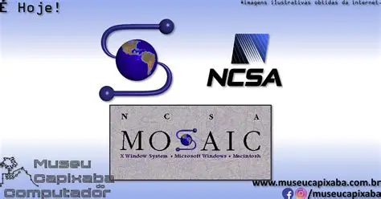
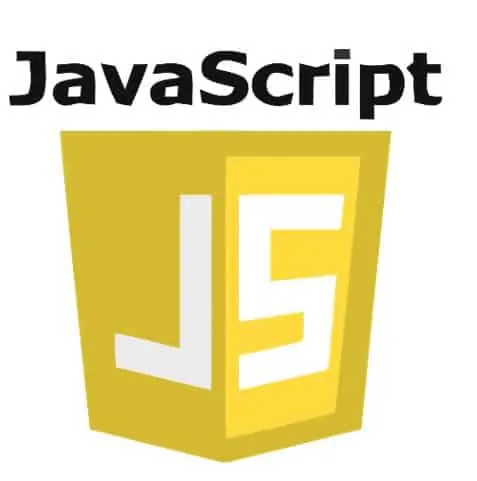
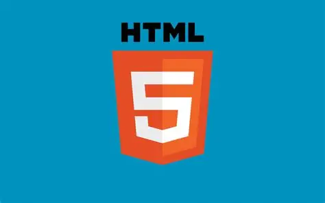

1989–1991 Naissance du Web
Tim Berners-Lee (CERN) propose le WWW, premier site en 1991. Impact : hypertexte mondial ouvert.

Parcours les jalons puis réponds au mini-quiz.
Tim Berners-Lee (CERN) propose le WWW, premier site en 1991. Impact : hypertexte mondial ouvert.
Mosaic popularise la navigation visuelle. Impact : adoption de masse.
Création du W3C pour standardiser. Impact : interopérabilité.
JavaScript apporte le dynamisme côté client. Impact : pages interactives.
CSS1/2, DOM. Impact : séparation contenu/présentation.
Wikipedia, YouTube; Ajax. Impact : apps web riches.
Vidéo, canvas, API. Impact : applications natives du Web.
Binaire, multiplexé. Impact : chargements plus rapides.
Let’s Encrypt. Impact : chiffrement par défaut.
Transport sur QUIC/UDP. Impact : latence réduite.
Sans mot de passe. Impact : sécurité + UX.